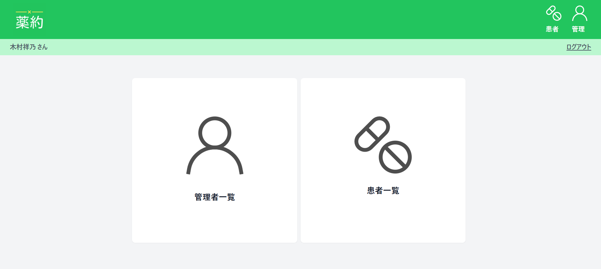
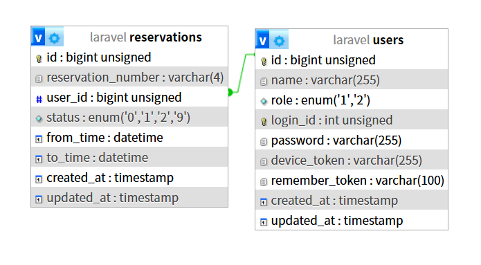
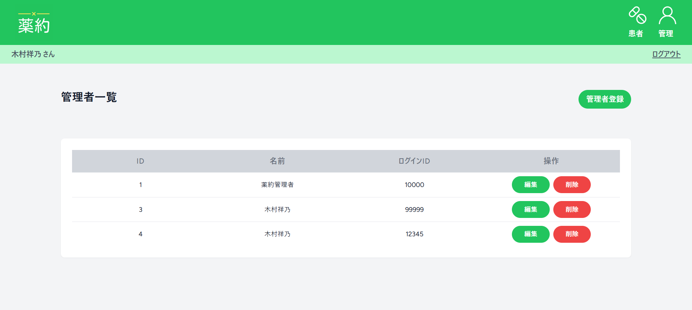
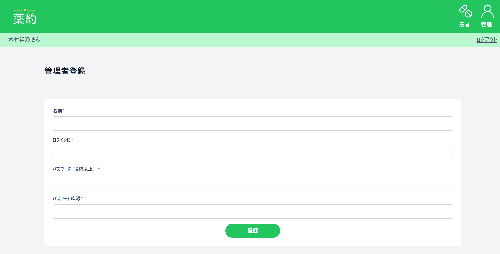
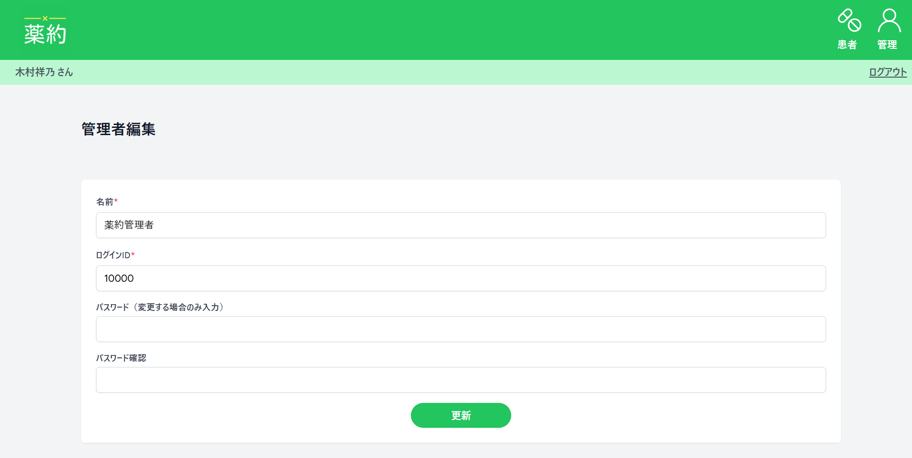
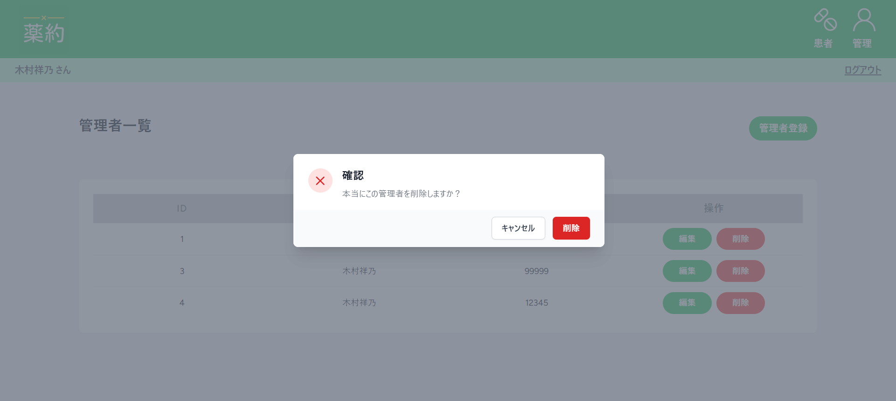
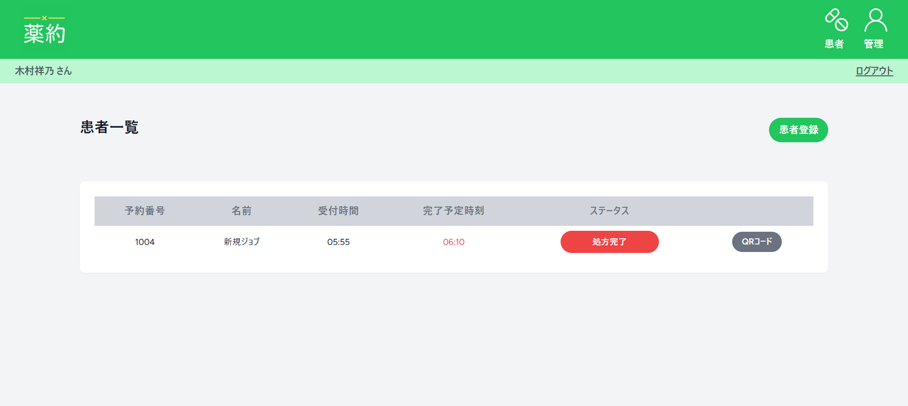
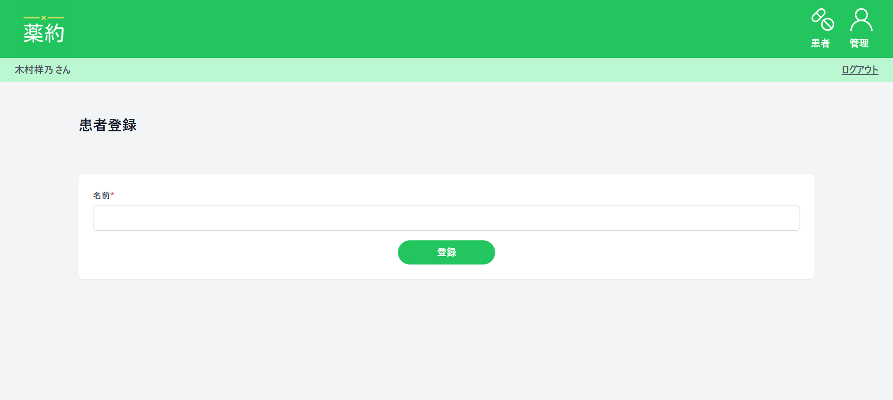
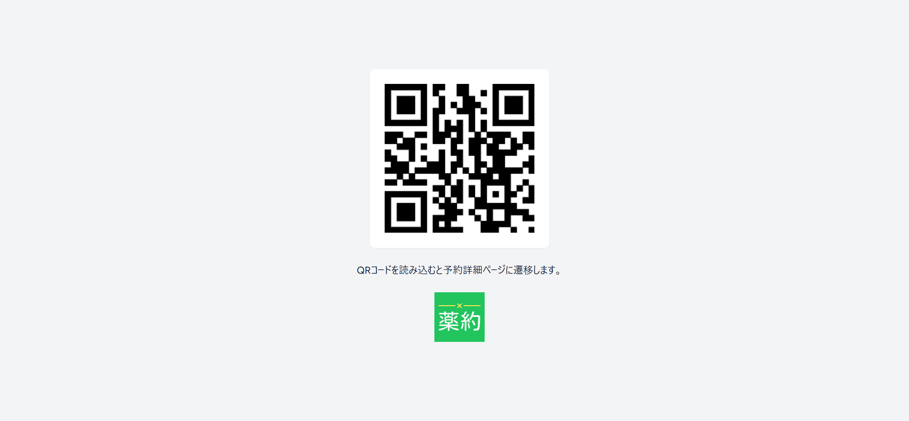
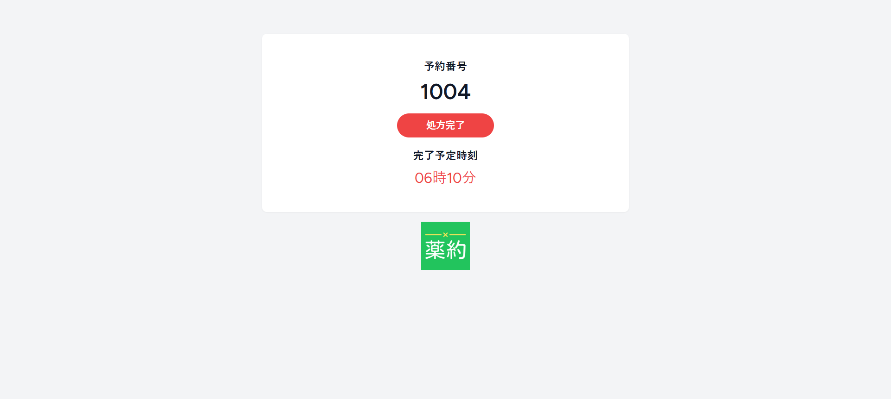

Gallery
処方箋予約アプリ「薬約(やくやく)」
- URL
- 制作期間
-
4日間
- 開発環境
-
コンテナ:Docker
データベース:MySQL
バックエンド:PHP/laravel Sail
フロントエンド:HTML/CSS/Tailwind CSS
コーディング:Cursor
- 作品説明
-
QRコードを活用した処方箋の受け取り管理を行うためのWebアプリケーションです。
地元の薬局で新しく導入したシステムからアイデアを得て作成しました。
受付が完了するとQRコードが発行され、処方の完了予定時刻やリアルタイムで進捗状況の確認できます。
管理者は顧客の受付・進捗管理を行い、QRコードを発行することができます。
リアルタイム更新にPusherを初めて採用したので実装に苦労しましたが、ブロードバンドの仕組みについて理解が深まりました。
フロントエンドはTailwind CSSを採用しています。
デザインは薬局のイメージの強い緑をベースに、シンプルでわかりやすいものを意識しました。
<参考URL>
WIX ロゴメーカー
一度は使ってみたい！LaravelでQRコードを生成する | ユアスク
Laravel BroadcastingとPusherでリアルタイムUI更新を試す - テーブル構成
-

- 画面構成
-
<ダッシュボード>
<管理者一覧画面> 
<管理者登録画面> 
<管理者編集画面> 
<管理者削除> 
<患者一覧画面> 
<患者登録画面> 
<QRコード画面> 
<予約詳細画面> 